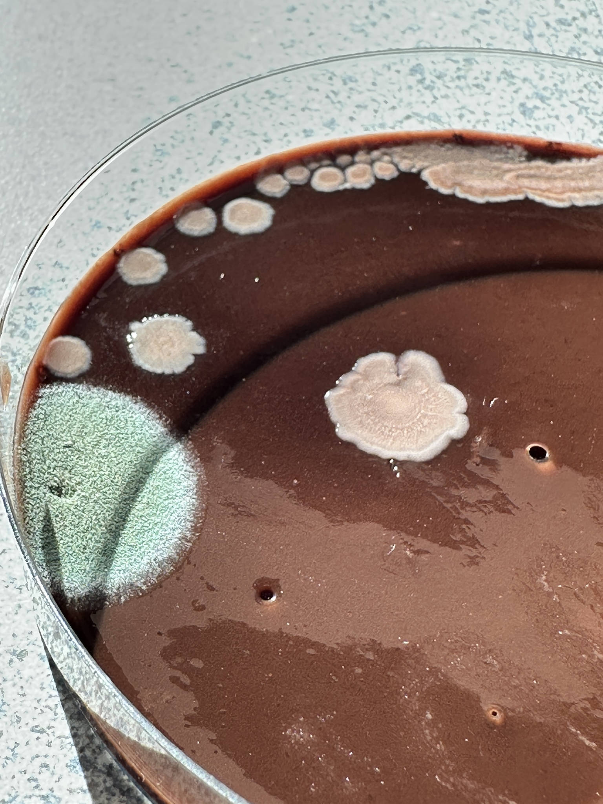
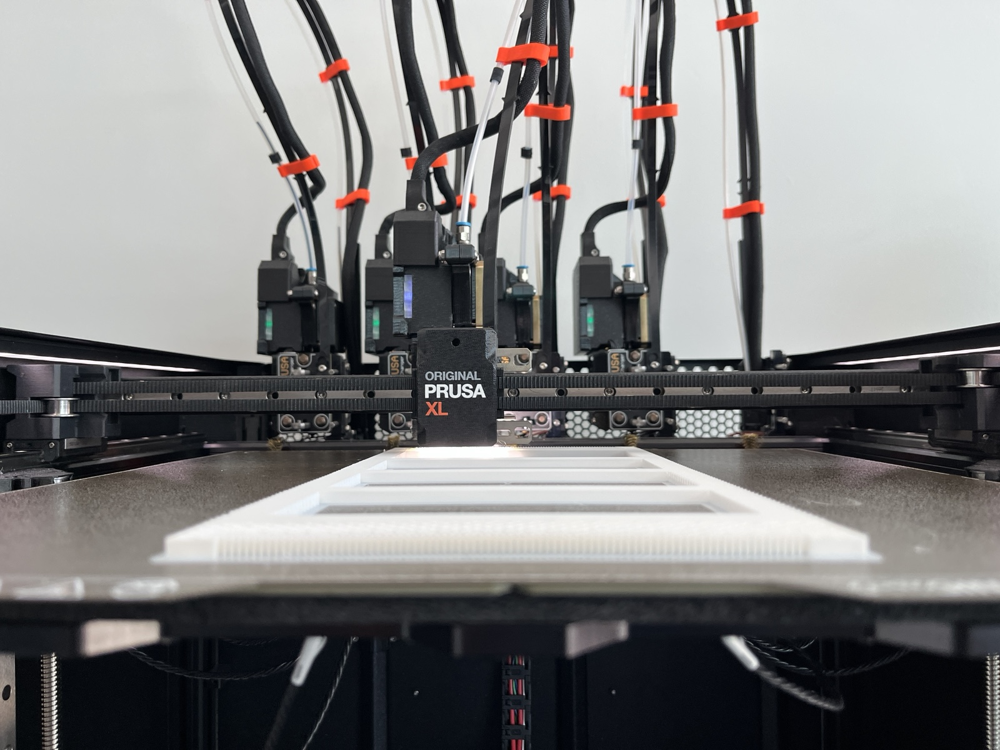
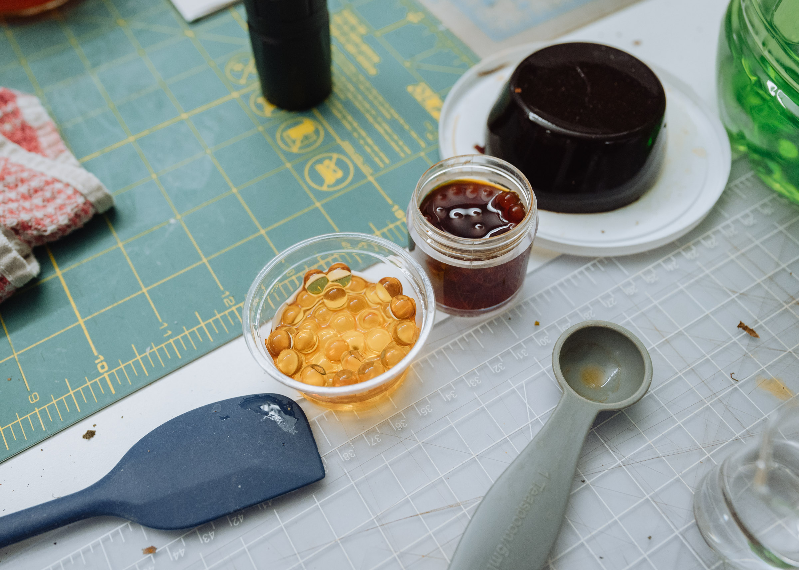
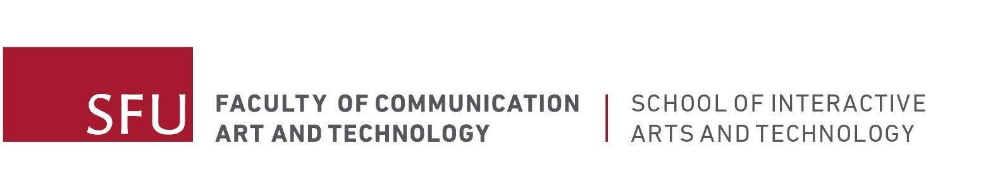

call for proposals
Submission deadline: June 30, 2026, 11:59 PST
The Sensing Matters Lab, an extension of the Everyday Design Studio at Simon Fraser University, invites project proposals from researchers, designers and artists that explore more-than-human material entanglements through hands-on exploration. The Sensing Matters Lab enables research-creation in more-than-human designing, biodesign, and bio-HCI, and welcomes material-focused projects that contribute to, operate in parallel with, or challenge these emerging perspectives of design through the applicant’s unique practice and approach. Some directions the Lab aims to explore include negotiating human and nonhuman agency and intentionality; notions of ethics, politics, and care when designing-with organic nonhumans; expansive design approaches that engage multiple ways of knowing through practice; and fostering regenerative material ecologies.
This residency seeks to build relationships of knowledge sharing between resident researchers and Simon Fraser University faculty and graduate students, fostering a rich, collaborative and inclusive network that builds bridges across domains. The successful applicant will work alongside and be supported by graduate students from the lab, and will be open to participation from fellow collaborating labs within the Faculty of Communication, Art, and Technology. The residency will consist of a proposed time frame of material-based research, followed by the dissemination of learnings through a workshop and public presentation.
about us
The Sensing Matters Lab, established in January 2026, is located at Simon Fraser University in Surrey, Canada. The lab is situated within the School of Interactive Arts and Technology, under the umbrella of the Faculty of Communication, Art, and Technology. Led by Professor Ron Wakkary, the lead of the Everyday Design Studio, the lab enables graduate students to explore more-than-human centered design theory in practice.
Some current applications of the lab include: processing of organic materials, creation of organic biomaterials for fabrication, digital design and fabrication of prototypes with biomaterials, and testing for real-world use, biodegradability, and compostability of the materials and prototypes.
Lab capabilities

Wet lab
Equipped with autoclave, incubators, microscope and more for bacteria and mycelium cultivation

digital fabrication
An assortment of filament and clay 3D printers, as well as a laser cutter and 3D scanner

Biomaterial Making
Industry-grade material processing equipment, including food processors, vacuum oven, dehydrator, sous-vide, composter, and heat press
residency information
length
Residency duration is between 1-4 weeks, as specified by the applicant and relative to the project objectives. To take place between September 1, 2026 and February 15, 2027, dates to be specified by the applicant.
Description
Explore a topic related to both the resident’s practice and more-than-human materiality, utilizing the capabilities of the Sensing Matters Lab. Expected outcomes are a synthesis of learnings, shared through a presentation and workshop with SFU faculty and students.
Eligibility
This opportunity is open to local, national, and international applicants. Applicants from any background are welcome to apply, permitted they have demonstrated experience in material research in their respective field.
Budget
all amounts are in canadian dollars
- All: Materials and equipment budget of up to $500. Workshop budget of up to $150.
- Non-academic/affiliated applicants: Eligible for additional compensation of $500/week.
- International applicants: Additional travel expense of $1,300. Accommodation expense of $300/week.
- National applicants: Additional travel expense of $700. Accommodation expense of $300/week.
selection process
Candidates will be selected by merit of their demonstrated experience, and suitability of their proposed research relative to the Sensing Matters Lab’s directives and equipment. Short-listed applicants shall be contacted by July 1, 2026, to schedule an interview, and selection results shall be shared shortly after with all short-listed applicants.
submission requirements
Portfolio or past research: Please submit a body of selected works that demonstrate your unique approach to more-than-human material research in practice. This may include past projects or academic publications. Submit as PDF format, 10MB maximum size.
Expression of Interest: Please describe your proposed research-creation project, its objectives, an estimated timeline, and an estimated budget. Please include how the proposed research explores more-than-human material entanglements through hands-on exploration. 500 words maximum, PDF format, 2MB maximum size.
Email your submission to marni_bowman@sfu.ca by June 30, 2026 at 11:59 PM PST.
The Sensing Matters Lab is located on the 3rd floor of SFU Surrey Campus, and is accessible by escalator and elevator. For specific accommodation requests, or other general inquiries, please contact marni_bowman@sfu.ca.
This residency is made possible through a Knowledge Mobilization Activity Fund, co-sponsored by the Faculty of Communication, Art, and Technology and the Vice-President, Research and Innovation at Simon Fraser University. Supplementary support is provided by a Government of Canada SSHRC Insight Grant.
